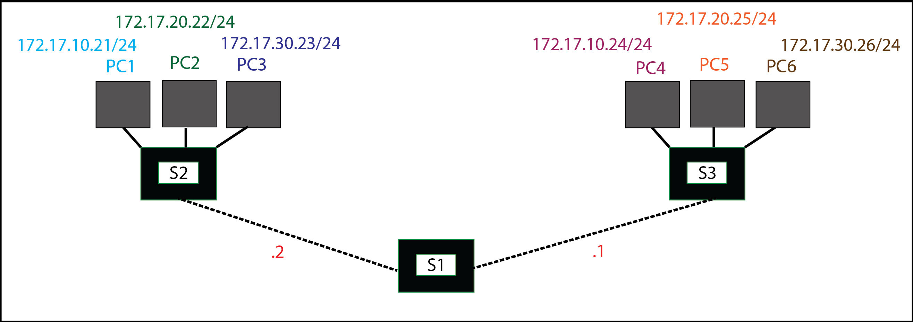

Administration système et réseau
Définitions et concepts de base :

Soit un réseau composé de deux groupes (PCs 1, 2, 3 et PCs 4, 5, 6) de trois machines chacuns connectés (câbles droits) à un switch. Les switchs (S2 et S3) sont eux-mêmes reliés (câbles croisés) à un troisième switch S1. Chaque switch possède huit cartes réseaux. On ne met pas encore en place les VLANs. La table de routage correspondante est la suivante (IPv4 Broadcast = passerelle réseau) :
La passerelle réseau est en /24 car /16 signifierait que l'on s'arrêterait au 3ème octet (10, 20 ou 30) : l'adressage (ping) marcherait alors entre toutes les machines (même si elles ont des sous-réseaux différents) car la partie machine serait ignorée (dernier octet). Plus précisèment, sans VLAN un switch considère toutes ses interfaces comme étant dans le même LAN et donc dans le même domaine de broadcast. Les machines doivent pouvoir distinguables les unes des autres afin de pouvoir mettre en place des réseaux virtuels.
On cherche maintenant à tester la connectivité entre les machines (ping réussi si pour 1 paquet envoyé, 1 est reçu, soit 0% perdu) :
- PC1 et PC2 : Elle ne fonctionne pas car ces machines sont sur des sous-réseaux différents (.10 et .20).
- PC1 et PC4 : Elle fonctionne car ces machine sont sur des sous-réseaux identiques (.10). Bien que les machines soient séparés par un switch, on est sur un réseau "à plat", avec les VLANs qui n'ont pas encore été mis en place, donc cela fonctionne. Si les VLANs avaient déjà été mis en place, cela n'aurait pas fonctionné.
- PC1 et PC2 (adresse IP 172.17.10.22/24 donnée à PC2) : Fonctionne car les sous-réseaux sont identiques (.10).
- vlan/create 10
- vlan/create 20
- vlan/create 30
- vlan/setvlan 3 10
- vlan/setvlan 4 10
- vlan/setvlan 5 20
- vlan/setvlan 6 20
- vlan/setvlan 7 30
- vlan/setvlan 8 30
- PC1 et PC2 : Elle ne fonctionne pas car ces machines sont chacunes isolées sur leurs réseau privatif respectif (VLAN 10 et VLAN 20).
- PC1 et PC4 : Elle ne fonctionne pas car bien que ces machines aient une VLAN identique (10), il y a une discontinuité des Trunk et il ne peut peut donc pas y avoir de transport de données dans des VLAN isolés par leur sous-réseau respectif place des VLANs qui isole chacun des composants au sein de leur sous-réseau respectif.
- PC1 et PC2 (adresse IP 172.17.10.22/24 donnée à PC2) : Elle ne fonctionne pas car bien que ces machines soient sur un même sous-réseau (10), leurs VLANs sont différentes (étanchéité VLANs).
- ------------IDENTIQUE------------
- vlan/create 10
- vlan/create 20
- vlan/create 30
- vlan/setvlan 3 10
- vlan/setvlan 4 10
- vlan/setvlan 5 20
- vlan/setvlan 6 20
- vlan/setvlan 7 30
- vlan/setvlan 8 30
- ------------IDENTIQUE------------
- vlan/addport 10 1
- vlan/addport 10 2
- vlan/addport 20 1
- vlan/addport 20 2
- vlan/addport 30 1
- vlan/addport 30 2
- PC1 et PC4 : Elle fonctionne car ces machines ont toujours le même sous-réseau et la même VLAN (10).
- PC1 et PC4 : Elle fonctionne car bien que les machines soient séparés par le switch S1, elles peuvent communiquer grâce à la mise en place des trunks. Les trunks font office d'interface réseau virtuel qui relie
- PC1 et PC2 : Elle ne fonctionne pas car PC1 et PC2 n'ont pas la même VLAN (10 et 20)). Pour qu'ils puissent communiquer, il faut configurer un routeur (RX) avec trois passerelles par défaut, une pour chaque VLAN et donc 3 cartes réseaux (eth0, eth1 et eth2) pour chaque VLAN (10, 20 et 30) : - eth0 doit être branché sur le port 3 ou 4 (VLAN 10) - eth1 doit être branché sur le port 5 ou 6 (VLAN 20) - eth2 doit être branché sur le port 7 ou 8 (VLAN 30)
- eth0 : 172.17.10.1/24
- eth1 : 172.17.10.1/24
- eth2 : 172.17.10.1/24
Soit un réseau composé des machines A, B, C, D et S reliées à des switchs S0 (A et B), S1 (C et D) et S2 (S). Chaque switch est relié à un ou deux routeurs, tel que R1 est relié à S0 et S1, R2 à S1 et S2, et RX à S2. Le routeur RX est relié à une Gateway G1. Le routage IP a déjà été configuré tel que spécifié sur le schéma et dans la fenêtre des interfaces (équivalent du fichier de configuration /etc/rc.local avec le logiciel de simulation Marionnet). On n'assigne aucune adresse IP aux machines B et D (clientes) car ce sera le serveur DHCP (A et C) qui affectera leurs adresses respectives, tel que A->B et C->D.
On cherche maintenant à tester la connectivité :
- A et R1 : Réussi car A a une adresse IP et R1 (côté eth0) peut communiquer avec la Gateway.
- B et R1 : Ne fonctionne pas ('Network is unreachable') car B n'a pas d'adresse IP.
- C et R1 : Réussi car C a une adresse IP et R1 (côté eth0) peut communiquer avec la Gateway.
- C et R2 : Réussi car C a une adresse IP et R1 (côté eth1) peut communiquer avec la Gateway.
- D et R1 : Ne fonctionne pas ('Network is unreachable') car D n'a pas d'adresse IP.
- D et R2 : Ne fonctionne pas ('Network is unreachable') car D n'a pas d'adresse IP.
- S et R2 : Réussi car S a une adresse IP et R2 (côté eth1) peut communiquer avec la Gateway.
- S et RX : Réussi car S a une adresse IP et RX (côté eth0) peut communiquer avec la Gateway.
- subnet 192.168.X.0 : Le 'X' doit être remplacé par le numéro de sous-réseau correspondant (10 pour A et 20 pour D).
- option routers 192.168.X.Y :Doit être remplacé par l'adresse IPv4 correspondante (192.168.10.11 pour A et 192.168.20.2 pour D)
- range 192.168.X.Y 192.168.X.Z : Le 'X' doit être remplacé par le numéro de sous-réseau correspondant (10 pour A et 20 pour D). Le 'Y' correspond à la première portée IP, et 'Z' à la seconde (peut prendre un intervalle environ égal à 10 par exemple).